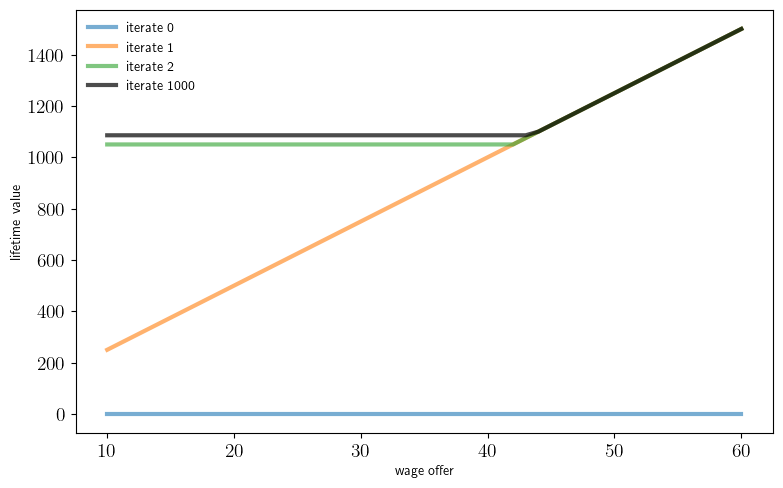

Chapter 1: Introductions#
two_period_job_search.py#
from quantecon.distributions import BetaBinomial
import numpy as np
from numba import njit
from collections import namedtuple
# NamedTuple Model
Model = namedtuple("Model", ("n", "w_vals", "φ", "β", "c"))
def create_job_search_model(
n=50, # wage grid size
w_min=10.0, # lowest wage
w_max=60.0, # highest wage
a=200, # wage distribution parameter
b=100, # wage distribution parameter
β=0.96, # discount factor
c=10.0 # unemployment compensation
):
"""
Creates the parameters for job search model and returns the
instance of namedtuple Model
"""
w_vals = np.linspace(w_min, w_max, n+1)
φ = BetaBinomial(n, a, b).pdf()
return Model(n=n, w_vals=w_vals, φ=φ, β=β, c=c)
@njit
def v_1(w, model):
"""
Computes lifetime value at t=1 given current wage w_1 = w
"""
β, c = model.β, model.c
s = np.maximum(c, model.w_vals)
h_1 = c + β * np.sum(s * model.φ)
return np.maximum(w + β * w, h_1)
@njit
def res_wage(model):
"""
Computes reservation wage at t=1
"""
β, c = model.β, model.c
s = np.maximum(c, model.w_vals)
h_1 = c + β * np.sum(s * model.φ)
return h_1 / (1 + β)
##### Plots #####
import matplotlib.pyplot as plt
import matplotlib.pyplot as plt
plt.rcParams.update({"text.usetex": True, "font.size": 14})
default_model = create_job_search_model()
def fig_dist(model=default_model, fs=10):
"""
Plot the distribution of wages
"""
fig, ax = plt.subplots()
ax.plot(model.w_vals, model.φ, "-o", alpha=0.5, label="wage distribution")
ax.legend(loc="upper left", fontsize=fs)
def fig_v1(model=default_model, savefig=False,
figname="./figures/iid_job_search_0_py.pdf", fs=18):
"""
Plot two-period value function and res wage
"""
n, w_vals, φ, β, c = model
v = [v_1(w, model) for w in w_vals]
w_star = res_wage(model)
s = np.maximum(c, w_vals)
continuation_val = c + β * np.sum(s * φ)
min_w, max_w = np.min(w_vals), np.max(w_vals)
fontdict = {'fontsize': 10}
fig, ax = plt.subplots(figsize=(9, 5.5))
ax.set_ylim(0, 120)
ax.set_xlim(min_w, max_w)
ax.vlines((w_star,), (0,), (continuation_val,), lw=0.5)
ax.set_yticks((0, 50, 100))
ax.set_yticklabels((0, 50, 100), fontdict=fontdict)
ax.set_xticks((min_w, w_star, max_w))
ax.set_xticklabels((min_w, r"$w^*_1$", max_w), fontdict=fontdict)
ax.plot(w_vals, w_vals + β * w_vals, alpha=0.8, linewidth=3,
label=r"$w_1 + \beta w_1$")
ax.plot(w_vals, [continuation_val]*(n+1), linewidth=3, alpha=0.8,
label=r"$c + \beta \sum_{w'} \max\{c, w'\} \varphi(w')$" )
ax.plot(w_vals, v, "k--", markersize=2, alpha=1.0, linewidth=2,
label=r"$v_1(w_1)$")
ax.legend(frameon=False, fontsize=fs, loc="upper left")
if savefig:
fig.savefig(figname)
fig_v1()
compute_spec_rad.py#
import numpy as np
# Spectral radius
ρ = lambda A: np.max(np.abs(np.linalg.eigvals(A)))
# Test with arbitrary A
A = np.array([
[0.4, 0.1],
[0.7, 0.2]
])
print(ρ(A))
0.5828427124746189
power_series.py#
import numpy as np
# Primitives
A = np.array([
[0.4, 0.1],
[0.7, 0.2]
])
# Method one: direct inverse
I = np.identity(2)
B_inverse = np.linalg.inv(I - A)
# Method two: power series
def power_series(A):
B_sum = np.zeros((2, 2))
A_power = np.identity(2)
for k in range(50):
B_sum += A_power
A_power = np.dot(A_power, A)
return B_sum
# Print maximal error
print(np.max(np.abs(B_inverse - power_series(A))))
5.6210591736771676e-12
s_approx.py#
"""
Computes the approximate fixed point of T via successive approximation.
"""
import numpy as np
def successive_approx(T, # Operator (callable)
x_0, # Initial condition
tolerance=1e-6, # Error tolerance
max_iter=10_000, # Max iteration bound
print_step=25): # Print at multiples
x = x_0
error = tolerance + 1
k = 1
while (error > tolerance) and (k <= max_iter):
x_new = T(x)
error = np.max(np.abs(x_new - x))
if k % print_step == 0:
print(f"Completed iteration {k} with error {error}.")
x = x_new
k += 1
if error <= tolerance:
print(f"Terminated successfully in {k} iterations.")
else:
print("Warning: hit iteration bound.")
return x
linear_iter.py#
from s_approx import successive_approx
import numpy as np
# Compute the fixed point of Tx = Ax + b via linear algebra
A = np.array([
[0.4, 0.1],
[0.7, 0.2]
])
b = np.array([
[1.0],
[2.0]
])
I = np.identity(2)
x_star = np.linalg.solve(I - A, b) # compute (I - A)^{-1} * b
# Compute the fixed point via successive approximation
T = lambda x: np.dot(A, x) + b
x_0 = np.array([
[1.0],
[1.0]
])
x_star_approx = successive_approx(T, x_0)
# Test for approximate equality (prints "True")
print(np.allclose(x_star, x_star_approx, rtol=1e-5))
Completed iteration 25 with error 2.911659384707832e-06.
Terminated successfully in 28 iterations.
True
linear_iter_fig.py#
import matplotlib.pyplot as plt
import matplotlib.pyplot as plt
plt.rcParams.update({"text.usetex": True, "font.size": 14})
import numpy as np
from linear_iter import x_star, T
def plot_main(savefig=False, figname="./figures/linear_iter_fig_1.pdf"):
fig, ax = plt.subplots()
e = 0.02
marker_size = 60
fs = 10
colors = ("red", "blue", "orange", "green")
u_0_vecs = ([[2.0], [3.0]], [[3.0], [5.2]], [[2.4], [3.6]], [[2.6], [5.6]])
u_0_vecs = list(map(np.array, u_0_vecs))
iter_range = 8
for (x_0, color) in zip(u_0_vecs, colors):
x = x_0
s, t = x
ax.text(s+e, t-4*e, r"$u_0$", fontsize=fs)
for i in range(iter_range):
s, t = x
ax.scatter((s,), (t,), c=color, alpha=0.2, s=marker_size)
x_new = T(x)
s_new, t_new = x_new
ax.plot((s, s_new), (t, t_new), marker='.',linewidth=0.5, alpha=0.5, color=color)
x = x_new
s_star, t_star = x_star
ax.scatter((s_star,), (t_star,), c="k", s=marker_size * 1.2)
ax.text(s_star-4*e, t_star+4*e, r"$u^*$", fontsize=fs)
ax.set_xticks((2.0, 2.5, 3.0))
ax.set_yticks((3.0, 4.0, 5.0, 6.0))
ax.set_xlim(1.8, 3.2)
ax.set_ylim(2.8, 6.1)
if savefig:
fig.savefig(figname)
Completed iteration 25 with error 2.911659384707832e-06.
Terminated successfully in 28 iterations.
True
iid_job_search.py#
"""
VFI approach to job search in the infinite-horizon IID case.
"""
from quantecon import compute_fixed_point
from two_period_job_search import create_job_search_model
from numba import njit
import numpy as np
# A model with default parameters
default_model = create_job_search_model()
@njit
def T(v, model):
""" The Bellman operator. """
n, w_vals, φ, β, c = model
return np.array([np.maximum(w / (1 - β),
c + β * np.sum(v * φ)) for w in w_vals])
@njit
def get_greedy(v, model):
""" Get a v-greedy policy. """
n, w_vals, φ, β, c = model
σ = w_vals / (1 - β) >= c + β * np.sum(v * φ) # Boolean policy vector
return σ
def vfi(model=default_model):
""" Solve the infinite-horizon IID job search model by VFI. """
v_init = np.zeros_like(model.w_vals)
v_star = compute_fixed_point(lambda v: T(v, model), v_init,
error_tol=1e-5, max_iter=1000, print_skip=25)
σ_star = get_greedy(v_star, model)
return v_star, σ_star
# == Plots == #
import matplotlib.pyplot as plt
import matplotlib.pyplot as plt
plt.rcParams.update({"text.usetex": True, "font.size": 14})
def fig_vseq(model=default_model,
k=3,
savefig=False,
figname="./figures/iid_job_search_1.pdf",
fs=10):
v = np.zeros_like(model.w_vals)
fig, ax = plt.subplots(figsize=(9, 5.5))
for i in range(k):
ax.plot(model.w_vals, v, linewidth=3, alpha=0.6,
label=f"iterate {i}")
v = T(v, model)
for i in range(1000):
v = T(v, model)
ax.plot(model.w_vals, v, "k-", linewidth=3.0,
label="iterate 1000", alpha=0.7)
fontdict = {'fontsize': fs}
ax.set_xlabel("wage offer", fontdict=fontdict)
ax.set_ylabel("lifetime value", fontdict=fontdict)
ax.legend(fontsize=fs, frameon=False)
if savefig:
fig.savefig(figname)
def fig_vstar(model=default_model,
savefig=False, fs=10,
figname="./figures/iid_job_search_3.pdf"):
""" Plot the fixed point. """
n, w_vals, φ, β, c = model
v_star, σ_star = vfi(model)
fig, ax = plt.subplots(figsize=(9, 5.5))
ax.plot(w_vals, v_star, "k-", linewidth=1.5, label="value function")
cont_val = c + β * np.sum(v_star * φ)
ax.plot(w_vals, [cont_val]*(n+1),
"--",
linewidth=5,
alpha=0.5,
label="continuation value")
ax.plot(w_vals,
w_vals / (1 - β),
"--",
linewidth=5,
alpha=0.5,
label=r"$w/(1 - \beta)$")
ax.legend(frameon=False, fontsize=fs, loc="lower right")
if savefig:
fig.savefig(figname)
fig_vseq()

fig_vstar()
Iteration Distance Elapsed (seconds)
---------------------------------------------
23 9.192e-06 5.063e-03
Converged in 23 steps